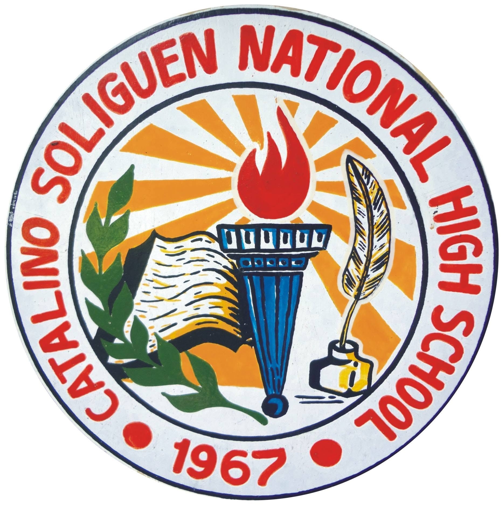
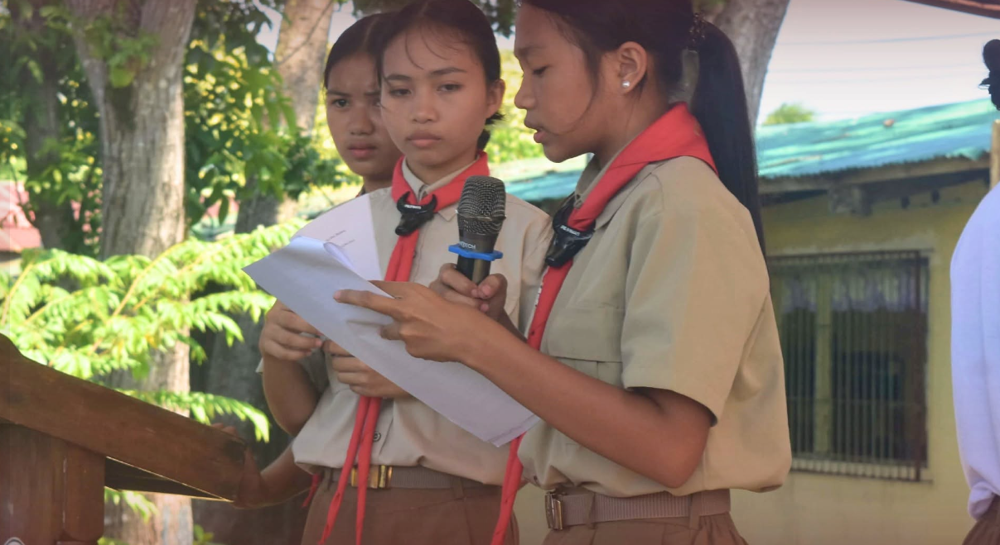
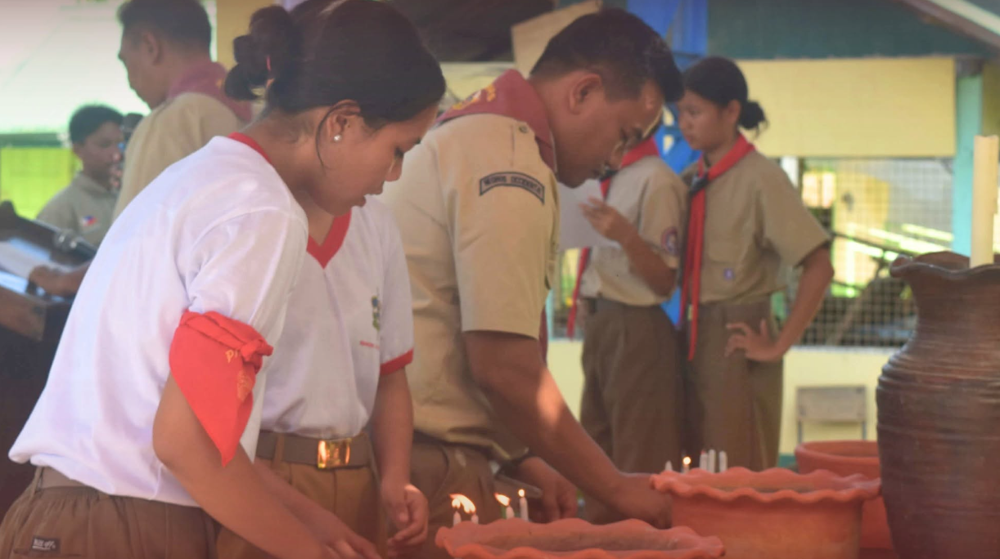
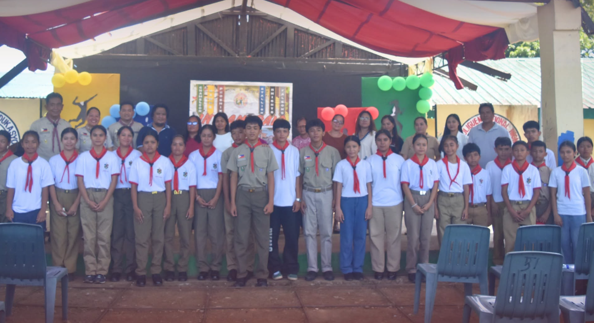
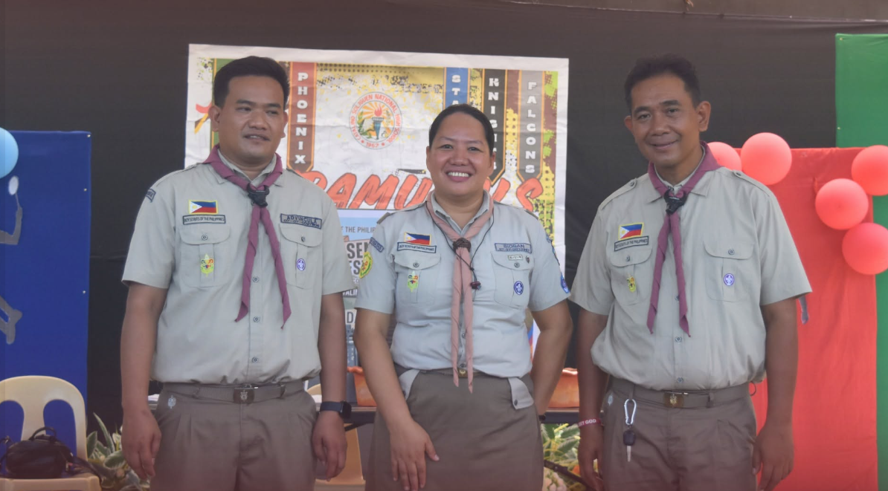
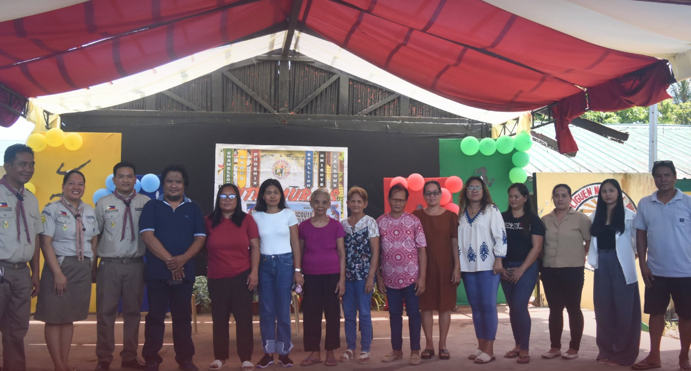
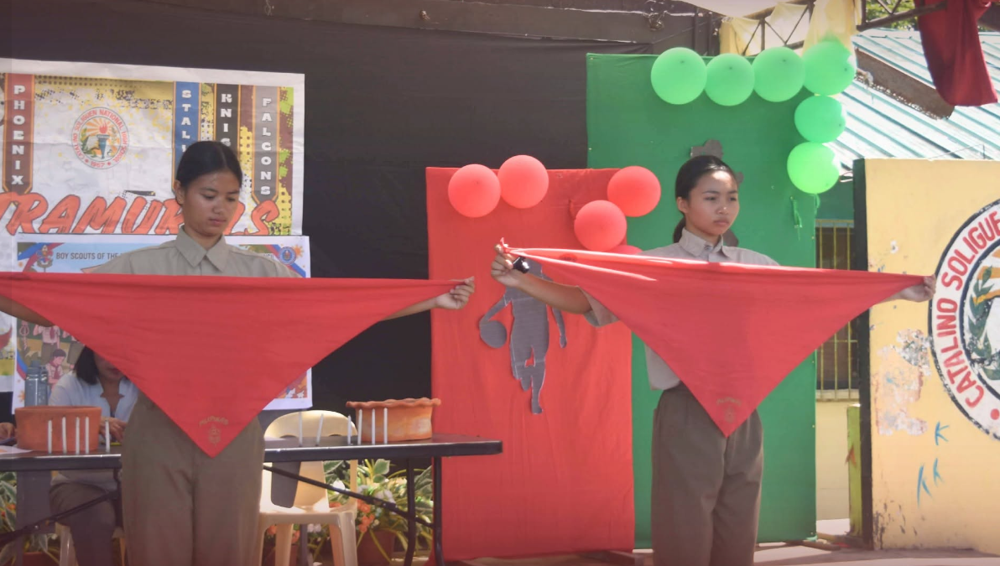

On August 17, 2026, young athlete Brylle Andrei B. Gicangao was recognised and received a certificate from school Principal Ma'am Thelma G. Buga-ay, his coach Ma'am Jestine P. Magbanua, and Sports Coordinator Sir Juven G. Saludares, on behalf of Catalino Soliguen National High School — after winning the gold medal in the National Interschool Short Course Swimming Competition held at the University of Saint La Salle, Bacolod.
Through hard work, determination, and months of rigorous training, Brylle secured 1st Place out of 38 competing swimmers. He expressed his gratitude to his coach, family, and friends for their unwavering support throughout his journey.
His outstanding victory serves as an inspiration to other young athletes — a reminder to work hard, stay focused, and never give up on their goals.






Igniting remarkable skills and talents, Catalino Soliguen National High School (CSNHS) secured 1st Runner-Up Overall in the Linggo ng Kabataan 2026 Literary Competition held on August 21, 2026, at the Municipality of Pontevedra Gymnasium. Guided by the SK theme, "Different Contexts, Common Aspirations," the event celebrated the youth's shared goals despite diverse backgrounds.
Competing against six schools — Antipolo National High School, Pontevedra National High School, St. Michael Academy of Pontevedra Inc., San Isidro National High School, Calvary Baptist Academy of Pontevedra Inc., and CSNHS — our student delegates excelled across Essay Writing, Poem Writing, Character Impersonation, Extemporaneous Speech, and Poster-Slogan Making.
Special recognition goes to Zeian Margareth F. Lumawag (Extemporaneous Speech — Filipino), trained by Ma'am Paula Rose Guache, and Mark Joseph Uvas (Poem Writing — Filipino), trained by Ma'am Elmy Roa Inson, who delivered inspiring performances that captivated the judges and audience alike.
The event concluded with a powerful reminder: no matter our differences, we all share the same aspirations to grow, belong, and succeed. CSNHS extends pride and congratulations to all delegates, coaches, and supporters for bringing honor to our school!
✍️ By: Madissen B. Fernandez
📸 Photos: Abigail Ann Saludares
🎨 Layout: Zyrene Faith Maquilla
Catalino Soliguen National High School (CSNHS) conducted its School Induction Ceremony on September 3, formally inducting newly elected PTA officers, classroom officers, and club officers for the new school year.
The event commenced with the Homage to God led by Mrs. Zion Grace Serra, followed by the singing of the Pambansang Awit conducted by Mrs. Joelita Sanchez. Opening remarks were delivered by Principal I, Ma'am Thelma G. Buga-ay. Before the oath-taking, selected YES-O officers led the crowd in an energizing Zumba dance.
The ceremony was graced by local officials and school stakeholders. Officers across all levels were formally inducted:
Classroom officers from Grade 7 (Psalms, Genesis, Exodus) up to Grade 12 (ABM, TVL, HUMSS) were recognized by their respective Grade Coordinators, followed by a message from SGC President Pastor Arn Parpa:
Grade Level Coordinators:
Grade 7 — Mrs. Joelita Sanchez
Grade 8 — Ms. Mia Gillesania
Grade 9 — Mrs. Zion Grace Serra
Grade 10 — Mrs. Elmy Inson
Grade 11 — Mrs. Loiryl Kae Tison
Grade 12 — Mrs. Wesvih Celes
Senior High School Coordinator Mr. Jorge Dediles led the induction of the Supreme Secondary Learner Government (SSLG) officers. Incoming SSLG President Reale Gicangao delivered an inspiring message, while Vice President Kaissen Marithe Caparangan led the reading of the Preamble.
Faculty Club President Mr. Juven G. Saludares administered the oath to officers from all academic departments — Araling Panlipunan, MAPEH, English, Mathematics, ESP, Science, Filipino, T.L.E. — and special organizations including YES-O, HUMSS Society, CYAME, and the Sports Club.
Closing the program, Mr. Jorge Dediles expressed gratitude to everyone and expressed confidence that the newly inducted leaders will serve as catalysts for progress throughout the school year. With the participation of school stakeholders and local officials, the ceremony strengthened the partnership between the school, parents, students, and the community.
✍️ By: Angel Altea, Danielle Kate Dagunan & Abegail Saludares
🎨 Layout: Zeian Margareth Lumawag
Talisay City, Negros Occidental — Excellence took center stage as the Department of Education (DepEd) Schools Division of Negros Occidental conferred honors on outstanding schools and education champions during the 2025 Seal of Excellence Awards. Held on January 16, 2026, at Padre Pio Hall, Nature's Village Resort, the event celebrated institutional dedication to quality education.
Standing out among the honorees, Catalino Soliguen National High School (CSNHS) was named a Silver Seal Awardee. Led by Principal I, Ma'am Thelma G. Buga-ay, the distinction underscores the school's sustained commitment to excellence, effective management, and learner-centered programs.
This recognition reflects the collaborative efforts of school administrators, teachers, learners, and community stakeholders in advancing educational quality.
The Seal of Excellence Awards serves as DepEd Negros Occidental's platform to highlight best practices, promote accountability, and inspire schools to continuously elevate their standards. Through this initiative, the division reaffirms its mission to nurture excellence and ensure meaningful learning experiences for every learner in Negros Occidental.
✍️ & 📸 Content & Photo: Cristina Joy Francis
🎨 Layout & Design: Blesing James Gonzales
September 30, 2026
Show appreciation to our beloved teachers.
October 15, 2026
Celebrating our school's founding anniversary.
December 18, 2026
Annual celebration and gift-giving.